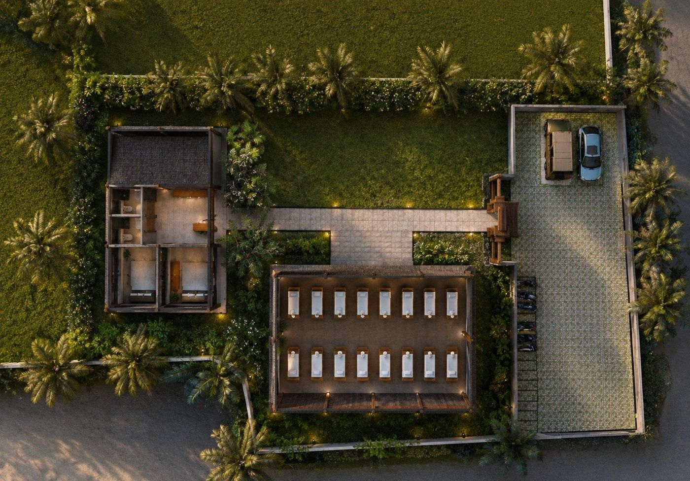
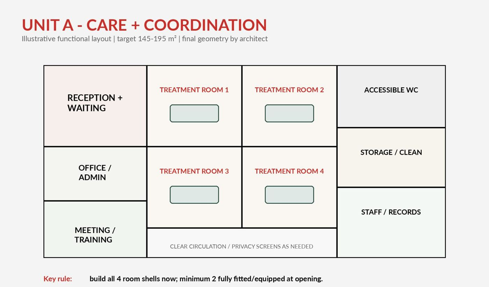
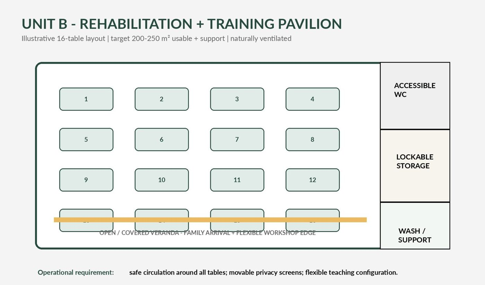
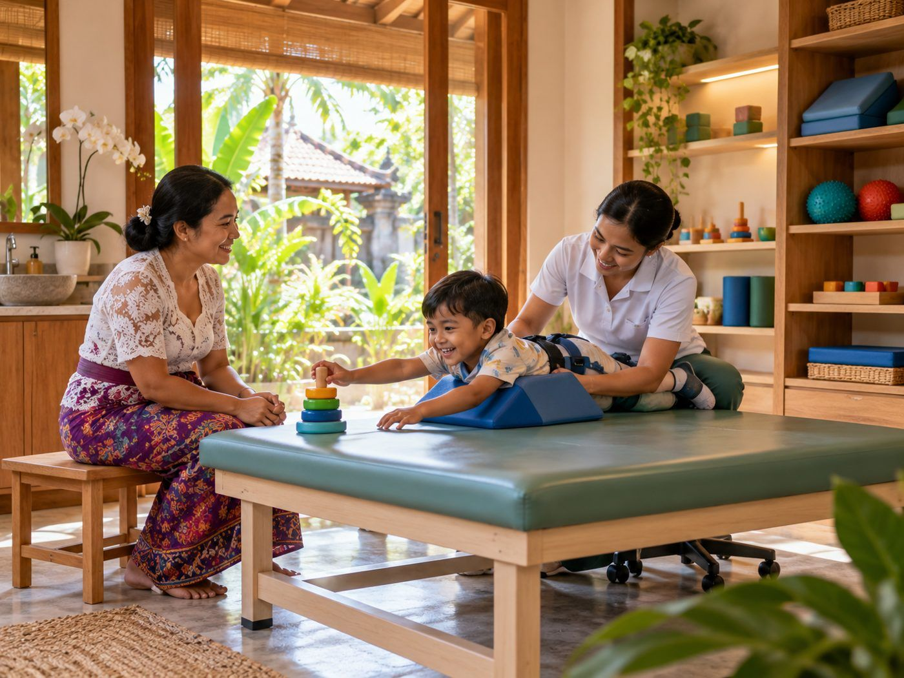

Our projects / Bahía de Niños
Flagship project · Bali, IndonesiaBahía de Niños
A permanent home for free disability care, rehabilitation, training and inclusion for children in Bali.

Children who need care every week, not once a year
In Bali, disability can carry social shame and karmic interpretation. Many children with cerebral palsy, developmental delay and neurological conditions are kept at home, with little access to specialised therapy. Transport, cost and distance make regular clinic visits hard for families, and specialist paediatric rehabilitation skills remain scarce.
Since 2016 we have returned to Bali again and again, working with local schools and foundations and visiting children at home. In 2025 alone, the Bali programme delivered 879 clinical sessions to 190 children and adults, including 90 home visits, and trained 24 local participants.
Those visits proved the demand and revealed the deeper problem: complex disability needs continuity. Visiting teams build trust, but they leave. Families need care that is there every week, local professionals who keep learning, and a place that remains.
Figures as published by Hands With Heart for its Bali partners (up to).
The gap Bahía de Niños closes: from periodic missions to year-round care; from visiting experts to a trained local team; from borrowed rooms to a place built for children with disabilities.
What Bahía de Niños will achieve
To give children with disabilities in Bali continuous, free, specialised care in a permanent, locally led centre, and to build the local capacity to sustain it.
Free, continuous care
Free or accessible paediatric disability and rehabilitation services, delivered by an Indonesian team in a compliant model. Core care is never tied to ability to pay.
Local capacity
A training ladder for Indonesian physiotherapists and health professionals, families and carers, with international faculty and university partners.
Pathways to participation
As the centre grows, vocational skills and work pathways for young people with disabilities: crafts, gardening, café and retail.
| Our approach | |
|---|---|
| Local first, legally compliant | Delivery by Indonesian professionals within an Indonesian yayasan and training structure. Foreign clinical practice is never assumed; international input focuses on education and approved activities. |
| Built on trust | Ten years of repeated work with SLB Negeri 1 Denpasar, Yayasan Legong and Yayasan Mentari Fajar, and a signed agreement with Universitas Dhyana Pura. |
| Simple, robust, Balinese | Contemporary Balinese design: natural ventilation, deep roofs, locally repairable materials. Calm rather than luxurious, and easy to maintain. |
| Phased and gated | Phase 1 is deliberately compact: two units that can open safely. Each next step proceeds only when design, legal, funding and operating conditions are met. |
| Funded to run, not only to build | Capital fundraising is matched by a 24-month operating plan, so the building opens with a team and keeps running. |
A compact centre that can open safely
An officially surveyed site of 5,404 m² in Sibang, Badung Regency, with two functional units. The design is contemporary Balinese, not an institutional clinic.


Care and coordination
- Reception and family waiting
- Office, administration and records
- Meeting and training room
- Four private treatment-room shells; at least two fully fitted at opening
- Accessible toilet, storage and clinical support
Rehabilitation and training pavilion
- Naturally ventilated, weather-protected hall
- Up to 16 treatment tables used at the same time
- Space for two learners per table during training
- Lockable storage and accessible toilet
- Flexible for care, teaching and family workshops
Optional items are priced separately as Phase 1B: a salt-water therapy pool, an assisted changing and shower suite, enhanced enclosure and air conditioning, landscape and future vocational works.
Design, pricing and legal set-up
Bahía de Niños is an advanced project, not an idea. The seed funding is committed and the site is surveyed. The current phase turns the concept into a measured, priced and legally sound project before construction begins.
- 2016–2025 · DoneRepeated missions in Bali; long-term relationships with SLB, Yayasan Legong, Yayasan Mentari Fajar and Universitas Dhyana Pura; €16,000 of infrastructure support to partner centres in 2025.
- 2025–2026 · DoneUS$400,000 seed commitment secured from a major donor.
- June 2026 · DoneOfficial boundary, topography and section surveys of the Sibang site.
- Sept–Oct 2026 · DoneBusiness plan, opening-year staffing and operating budget, equipment catalogue, and a consolidated architect and contractor design brief (5 October 2026).
- Now · In progressSurvey-based design, permit route, measured bill of quantities and at least two comparable contractor quotes.
- Now · In progressFinal land agreement and site control; Indonesian yayasan and training structure; written legal opinion on permitted activities and licensing.
- Spring 2027 · TargetConstruction start of Phase 1, once the decision gate is met.
A construction deposit is only considered once there is a survey-based design, a coordinated structure and services, a confirmed permit route, a measured bill of quantities and at least two comparable contractor prices. Land and licensing are still being finalised, and we will tell you if timing changes.
From a two-unit centre to a campus
| Phase | Scope | Proceeds when |
|---|---|---|
| Phase 0 · 2026 – early 2027 | Design, bill of quantities, contractor selection, permits, land agreement, Indonesian entity, legal opinion, recruitment plan, policies (safeguarding, clinical governance, data). | Decision gate met; capital committed for the base price. |
| Phase 1 · Build and open · 2027 | Unit A and Unit B, site works and access. Recruit and train 14 Indonesian staff. Open with 14–20 children per day; core equipment packages in place. | Building handed over; team in post; 24 months of operating costs covered. |
| Phase 1B · Options | Salt-water therapy pool, assisted changing suite, therapy technology packages, inclusive playground and outdoor pavilion. | Separately priced and funded; clinical validation where needed. |
| Phase 2 · Grow · 2028–2029 | Expand training (around 300 people over three years), add treatment-room fit-out, start vocational pathways for young people, research with university partners. | Phase 1 runs year-round with outcomes reported. |
| Long-term vision | A campus-like inclusive environment: additional treatment pavilions, therapy pool and wellness pavilion, volunteer residence, community warung and expansion areas. | Evaluation of Phases 1–2 and new funding. |
A local team to run the centre every day
The centre opens with 14 Indonesian employees: eight physiotherapists and six support and operations staff. International specialists contribute training and supervision; their costs are not included here.
Core operations include electricity, water, internet, cleaning, maintenance, insurance, accounting and legal compliance, booking and records software, and two adapted transport vehicles. Staff costs are loaded annual estimates, to be confirmed against the 2027 Badung wage floor by an Indonesian accountant.
The funding picture
Bahía de Niños needs three kinds of support: capital to build Phase 1, equipment that makes the centre work for children, and operating funding so it runs from day one.
still to raise, of a US$650,000 Phase 1 ambition. US$400,000 is already committed.
US$20,000 to US$100,000 each. Estimated equipment cost US$350,000; full packages up to US$700,000.
for the first 24 months (US$83,081 per year), so the centre opens with a funded team.
Our construction estimate was built on a 240 m² reference footprint. The current Phase 1 brief covers about 367–479 m² of covered area, so the measured bill of quantities from the architect and contractors will replace it. The split of the US$650,000 ambition between land and site, construction, equipment and set-up will be confirmed with that price.
Sixteen ways to equip the centre
Each opportunity is a complete package: equipment or space plus what it takes to use it well. The suggested gift covers the estimated equipment cost and, where needed, freight, installation, training, consumables, servicing and a replacement reserve. Final amounts are confirmed with current quotations and a donor agreement.
| # | Opportunity | Tier | Equipment est. (US$) | Suggested gift (US$) |
|---|---|---|---|---|
| 01 | Complete Pediatric Rehabilitation Gym | Core for opening | 26,000 | 50,000 |
| 02 | Advanced Photobiomodulation / Therapeutic Laser System | Therapy technology | 20,000 | 40,000 |
| 03 | Equipped Pediatric Treatment Rooms | Core for opening | 21,000 | 40,000 |
| 04 | Sensory & Regulation Room | Core for opening | 27,000 | 50,000 |
| 05 | Advanced Supported Gait Training System | Therapy technology | 32,000 | 75,000 |
| 06 | Interactive Movement & Therapy Floor | Therapy technology | 9,000 | 25,000 |
| 07 | Accessible Changing, Shower & Transfer Suite | Core for opening | 26,000 | 50,000 |
| 08 | Digital Gait, Balance & Force-Plate System | Therapy technology | 18,000 | 45,000 |
| 09 | Eye-Gaze Communication & AAC Station | Therapy technology | 18,000 | 30,000 |
| 10 | 3D Printing & Adaptive Equipment Workshop | Therapy technology | 12,000 | 30,000 |
| 11 | Portable Clinical Ultrasound / POCUS System | After clinical validation | 8,000 | 20,000 |
| 12 | Pressure Mapping & Seating Assessment System | After clinical validation | 12,000 | 25,000 |
| 13 | Functional Electrical Stimulation (FES) Package | After clinical validation | 14,000 | 30,000 |
| 14 | Robotic / Assisted Upper-Limb Rehabilitation System | After clinical validation | 22,000 | 40,000 |
| 15 | Adaptive / Inclusive Playground | Built environment & legacy | 55,000 | 100,000 |
| 16 | Covered Outdoor Therapy Pavilion | Built environment & legacy | 30,000 | 50,000 |
Core for opening: needed for daily care from day one. Therapy technology: extends what therapists can do. After clinical validation: funded once clinical use is confirmed. Built environment and legacy: permanent, visible spaces.

Help build a permanent home for care in Bali
Recognition, transparent reporting against budget, and an invitation to visit the site and meet the team. Restricted gifts are tracked and reported against their agreed purpose.